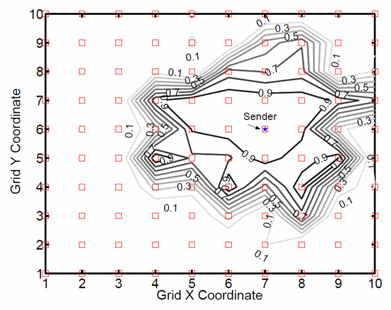

Routing
LLN characheristics
- resource constraints
- intermittent connectivity (congestion, interferences)
- lossy links → dynamic loss rate (environment factors)
{kind=link}

- Flat routing → No hierarchy, no special role and the routing protocols doesn’t exploit any organization
- eg. flooding, AODV
- Hierarchical routing → suitable to data aggregation
- cluster based
- Location based routing → Node location is exploited (via GPS)
Flooding
Upon receiving a packet, the message is forwarded to all their neighbours

- It implies that the final destination receive different copy of the same message from different paths
- lot of messages → interference → collisions → retrasmission
- high energy consumption → unsuitable for LLNs
Hierarchical Routing
regular sensor nodes and relay nodes (cluster heads, router nodes)
two step forwarding
- sensor send data to relay nodes
- relay nodes forward data to the sink node
Two approaches
- cluster based collection
- tree based collection
LEACH
cluster hierarchy
- a cluster-head (CH) within each cluster
- distributed CH election algorithm → rotation for uniform distribution of energy consuption
Each node selects the CH minimizing the energy needed for communications → closer to the node typically
CHs forward messages to the sink
- Direct communication
- TDMA schedule


Good for energy saving mechanism → cluster head could aggragate data, or decide whether or not send the msg
Tree based routing
nodes can send packets only to their parent
- nodes needs to self-organize in a tree structure
- here all the nodes needs to be aware of the neighbouring nodes, not just the CH

Estimating the link lenght to arrive to the destination → we can asses the loss proability
One approach to build the tree is by using the broadcast and reverse path
- Sink node periodically send beacons messages and other nodes will rebroadcast
- Nodes use the source address of the first received beacon to select the parent node
This could cause messages to collide, maybe receiving the first readable from a further node
- no shortest path considered and also no link quality considered
Second approach is the Shortest Path (SP)
- based on the hop count metrics → It’s a conventional Distance Vector (DV) protocol
- During the propagation of messages to construct the tree, these messages contain a hop count counter that increases each time a node retransmits the message.
- the preferred parent is the one that guarantees the minimum number of hops to the data collector
We are just considering the hop and not the link quality
RPL Protocol
Routing requirements depends on the application, like:
- industrial, smart cities, home automation, building automation
Once listed all they design a new protocol

Main features
- distance vector protocol → either multipoint-to-point, point-to-multipoint and point-to-point
- specifically designed for LLNs
- layer 3 routing protocol
Destination-Oriented Directed Acyclic Graph (DODAG)
- Tree-like structure, but nodes can associate to more than one parent
- Routes are then computed based on a distance vector protocol

Devices:
- Low Power and Lossy Border Router (LBR)
- Root of a DODAG
- The LBR also acts as a gateway between LLN and Internet
- Router
- A device that can generate and forward traffic
- A router does not have the ability to create a new DODAG, but associate to an existing one
- Host → End device
- Can generate data traffic
- Cannot forward traffic


RPL topologies
- Hierarchical Topology: Nodes are forced to form DODAGs (based on parent-child relationship)
- Mesh Topology: RPL allows the forwarding through siblings, when needed
Auto-Configuration
- RPL-based LLNs benefit from basic IPv6 routing characteristics
- Neighbor Discovery
Self-Healing
- Adaptation to network topology changes and node failures
- links and nodes in LLNs are not stable and may vary frequently
- mechanisms that choose more than one parent per node in the DODAG to eliminate/decrease the risk of failure
Loop avoidance and detection
- RPL includes reactive mechanisms to detect loops
- RPL triggers recovery mechanisms (global and local repair) when the loops occur
RPL can operate over multiple link layers
- independent from data-link layer technology
It is possible to construct multiple DODAGs, each with a root (BR)
RPL Instances refer to separate copies of the RPL routing protocol running in a network. Each RPL Instance operates independently and has its own routing table and configuration settings
- Identified by
RPLInstanceID
- One or more DODAGs, identified by the same RPLInstanceID
- All DODAGs within the same Instance share the same metrics/constraints
- RPL nodes may belong to different instances
- But to one and only one DODAG per RPL instance
Each Instance has its own Objective Function (OF), configuration, and routing table
- used for different types of requirements in the same network

Rank
Root node is established from the beginning → not dynamic

A rank is an integer that represents the location of a node within the DODAG
- The rank value strictly increases in the downstream direction
- lower value → higher rank
- It is not a measure of the path cost towards the root
The rank is used for:
- avoid and detect routing loops
- select the next hop for forwarding
- a parent (lower rank)
- sibling (equal rank)
Nodes maintain a list of candidate parents and siblings
- used if the current parent loses its routing ability
Ranks are generated via an Objective Function (OF)
It defines how nodes translate one or more metrics/constraints into ranks
- Delay, Bandwidth, Reliability
- Node Energy (eg. battery or connected), Node attributes
- Hop count, link throughput, link reliability
Defines also how to compute the path cost, how to select the parent
I could use two functions concurrently. Example: network with two main applications
- Alarms: time sensitive paths, short delay, highly reliable paths
- Telemetry: non-time sensitive paths, minimum number of hops, not traversing battery-operated nodes to preserve their energy
OF used in practice
- OF0 (objective function zero) → no metrics measured, just relies on hop_counts
- MRHOF that is based on various metrics such as link quality, node energy, and path cost
MSG types
Based on 6 ICMPv6 messages
- DIS → DODAG Information Solicitation for a DIS message
- may be used to probe neighbor nodes in adjacent DODAGs
- DIO → DODAG Information Object
- used to construct a new DODAG
- Broadcast to all nodes by the root → allow nodes to discover RPL instance and it’s configuration parameters (OF), select a parent
- the message contains a
version numberthat is incremented every time an update is done,RPLInstanceID, the rank of the sender,DODAGID, mode of operation (MoP)
- DAO → Destination Advertisement Object
- Used to propagate reverse route information, by recording the nodes visited along the path
- Sent by all, rather then the root → populate routing tables with adresses of children for the non-leaf nodes
- contains apart form the two ids,
DAOSequence, incremented by one at each passage
- DAO-ACK → DAO Acknoledgement in response to a DAO message
DODAG Contruction
Composed in two phases
- Broadcast transmission of DIO messages from root
- to build upward routes from nodes to the root
- Each node, before re-broadcast the message, update the value of the rank. It allows each node to determine its position along the DODAG
- by receiving a DIO message, a node learns the set of nodes in the one-hop neighborhood
- using the OF in the msg, it calculate it’s rank (based on ranks received by the neighbours)
- select one or more parents from the neighbor set (lower rank) and a preferred parent
- DIO messages are periodically re-broadcast to update routing information.
- If using a small period: reduces the probability of having stale information or persistence of loops, but of course uses more bandwidth and energy
- Unicast transmission of DAO messages
- To build downward routes from the DODAG root to nodes
- each node sends a DAO to the root, via the selected parent
- Upon receiving a DAO message, a visited node
- Inserts its address in the DAO message
- Retransmits the updated DAO message upward
- Upon receiving a DAO message, the root learns the downward route towards that node
Mode of operations for downward routes (specified in the DIO message):
- Storing Mode → Upon receiving a DAO message, an intermediate node
- Inserts its own address in the DAO message
- Shortest route advertised in the DAO message is stored
- Forwards the DAO message to its preferred parent
- Non-Storing Mode → Upon receiving a DAO message, an intermediate node
- Inserts its own address in the DAO message
- Does not store the route advertised in the DAO message
- Forwards the DAO message to its preferred parent